01
The Discovery
In early 2026, a single cartridge surfaced in a private lot of obsolete hardware, unmarked except for a faded serial code and a half-buried label. What followed was part restoration, part obsession.
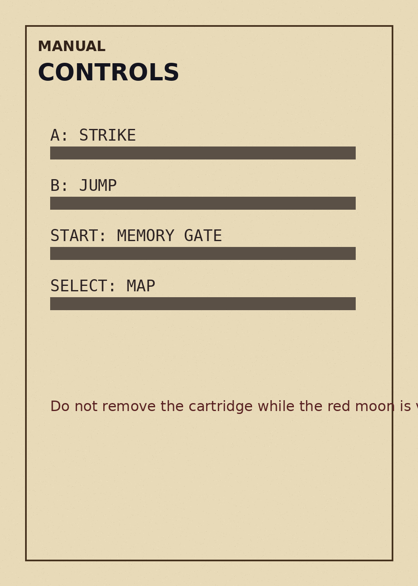
PX-16 archive terminal
Press Enter, Space or the button to enter the archive.
PX-16 / build 0.71 / unreleased
A lost 16-bit game from an alternate 1989, reconstructed from fragments, rumours and one surviving build.
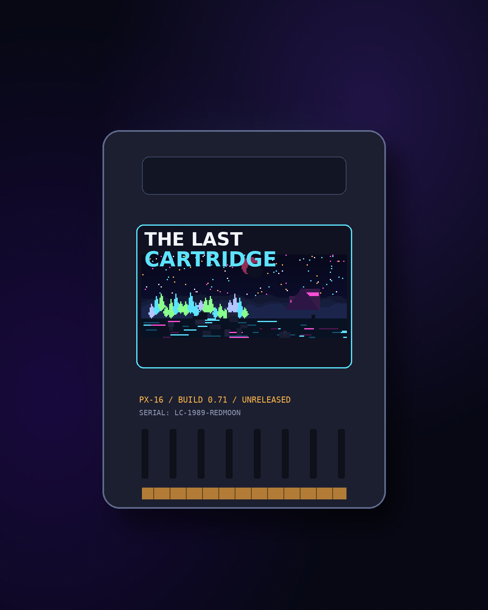
01
In early 2026, a single cartridge surfaced in a private lot of obsolete hardware, unmarked except for a faded serial code and a half-buried label. What followed was part restoration, part obsession.

02
From corrupted tiles, surviving scenes and handwritten notes, a world began to return: broken, beautiful and far stranger than anyone expected.
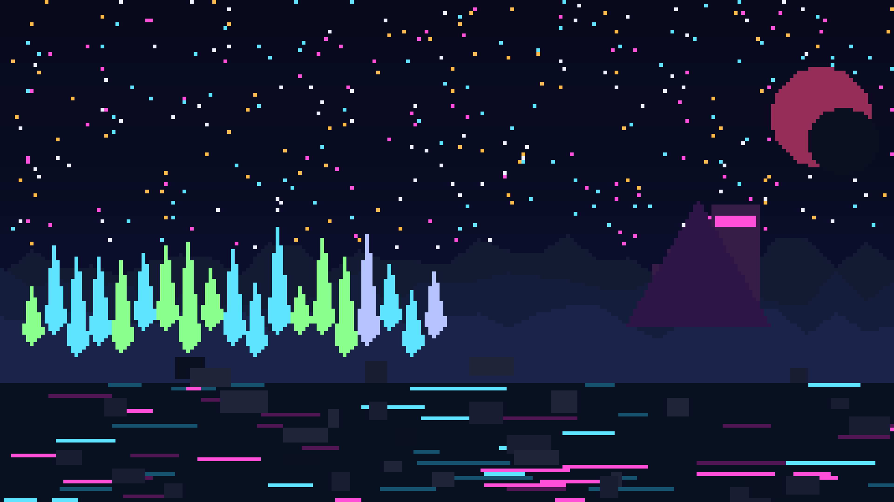
03
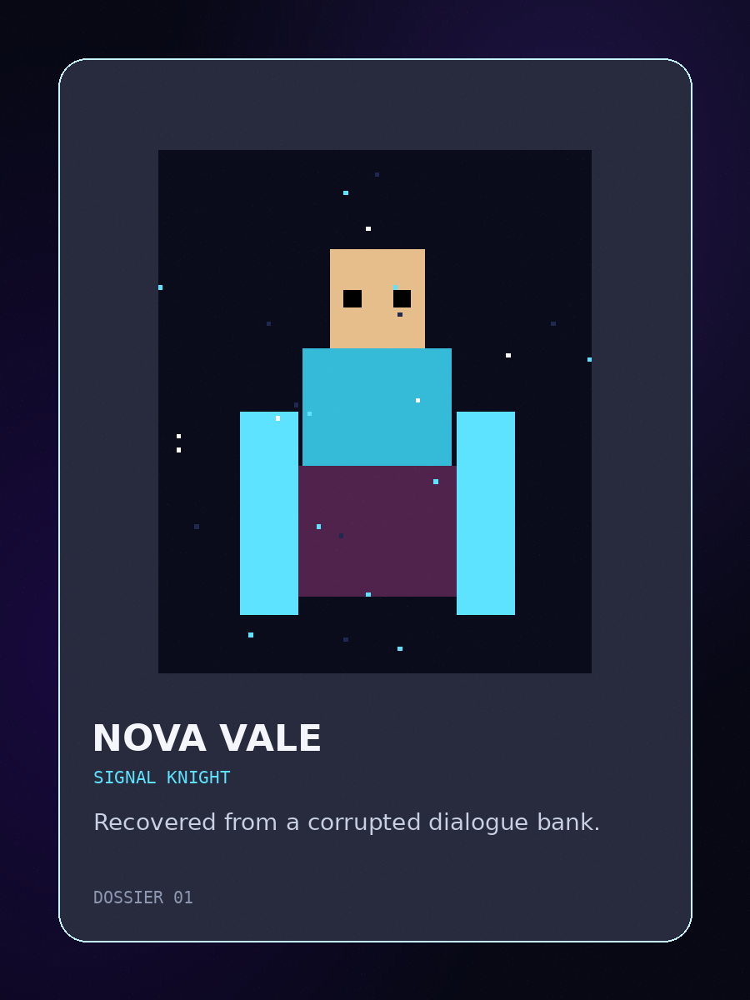
Dossier 01Signal Knight
Recovered from a corrupted dialogue bank.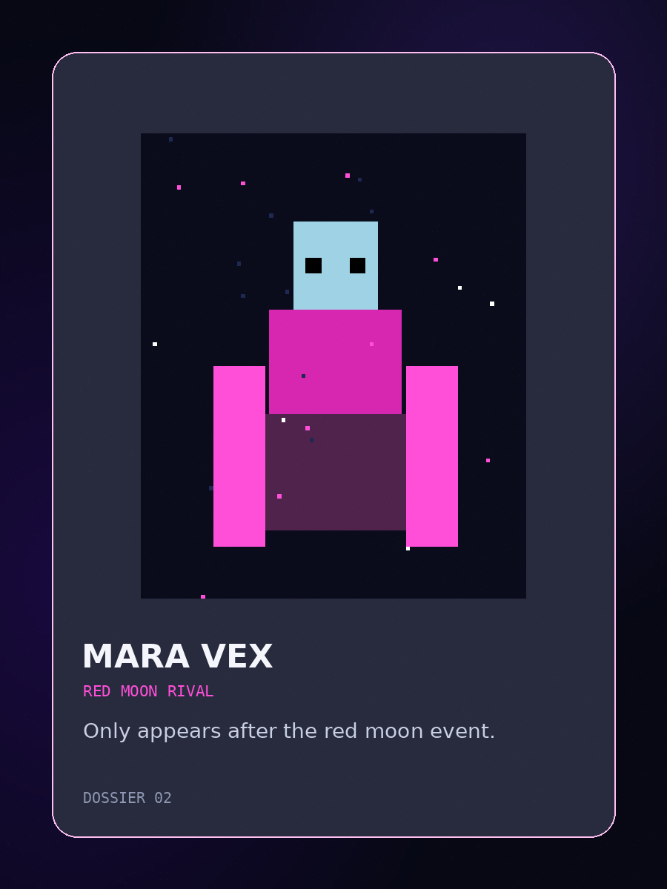
Dossier 02Red Moon Rival
Only appears after the red moon event.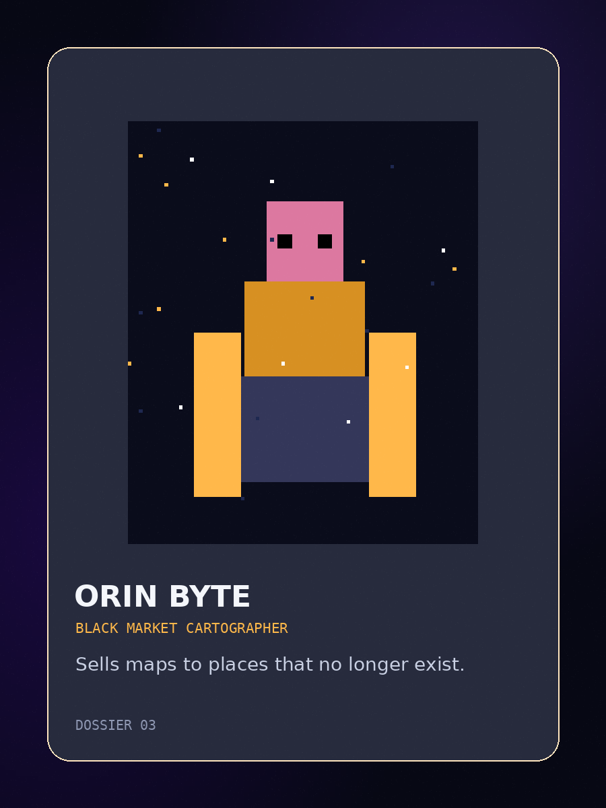
Dossier 03Black Market Cartographer
Sells maps to places that no longer exist.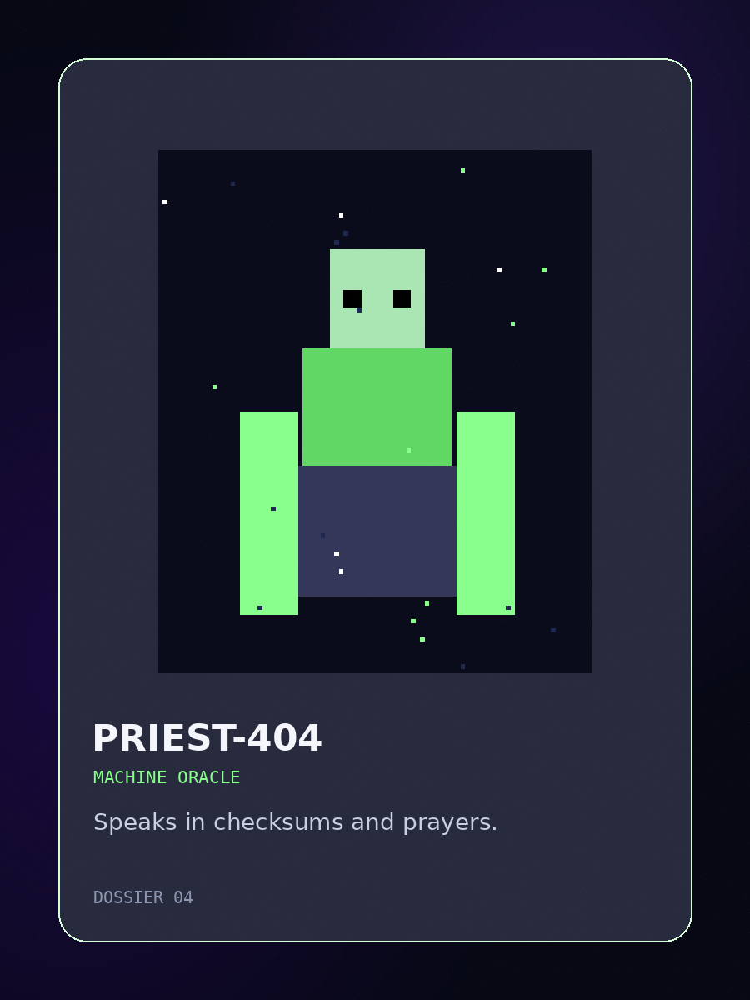
Dossier 04Machine Oracle
Speaks in checksums and prayers.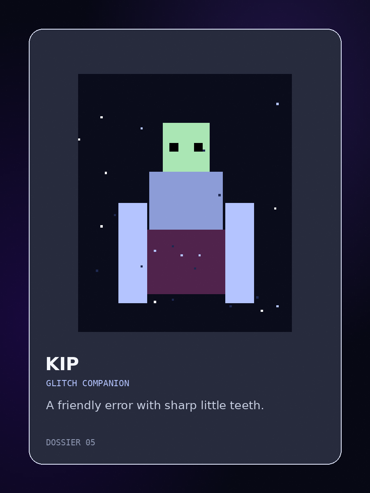
Dossier 05Glitch Companion
A friendly error with suspicious timing.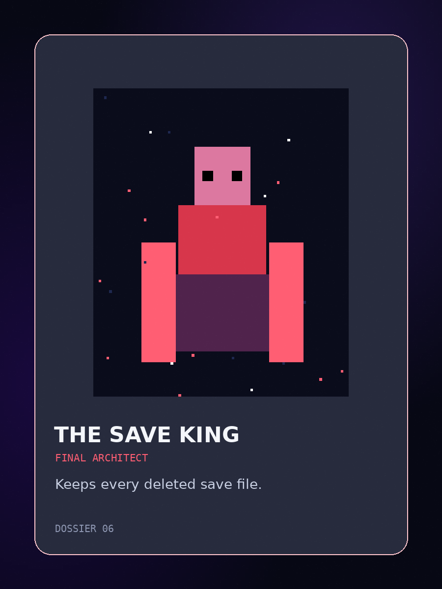
Dossier 06Final Architect
Guards the last writable memory gate.04
Not a final build. Not even a full one. But enough to prove the myth was real.
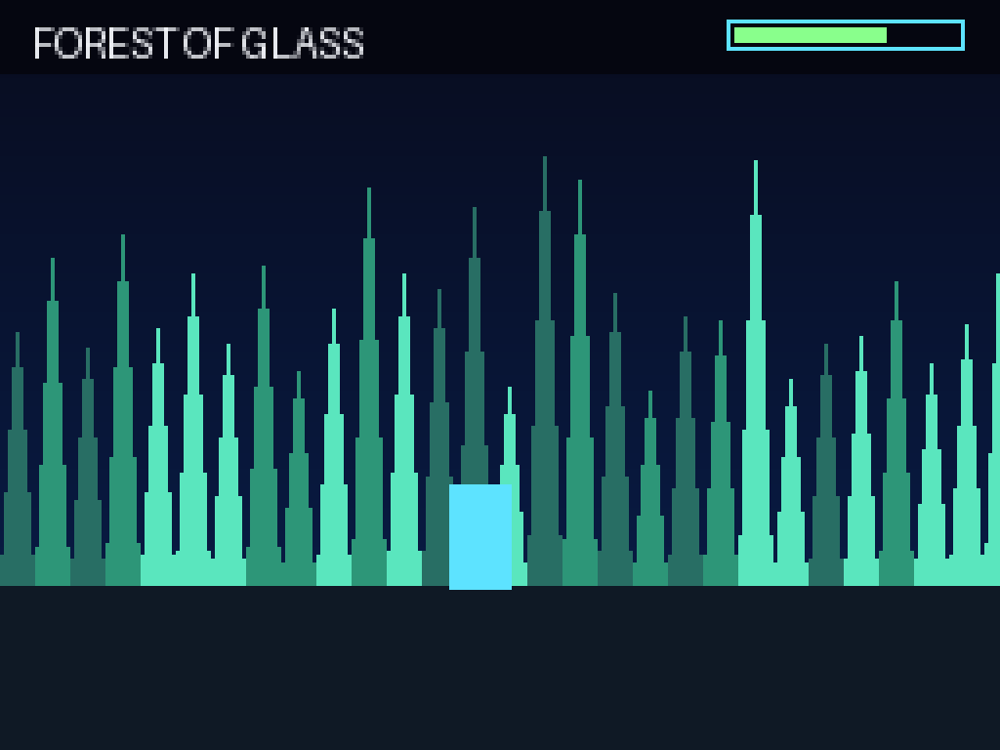
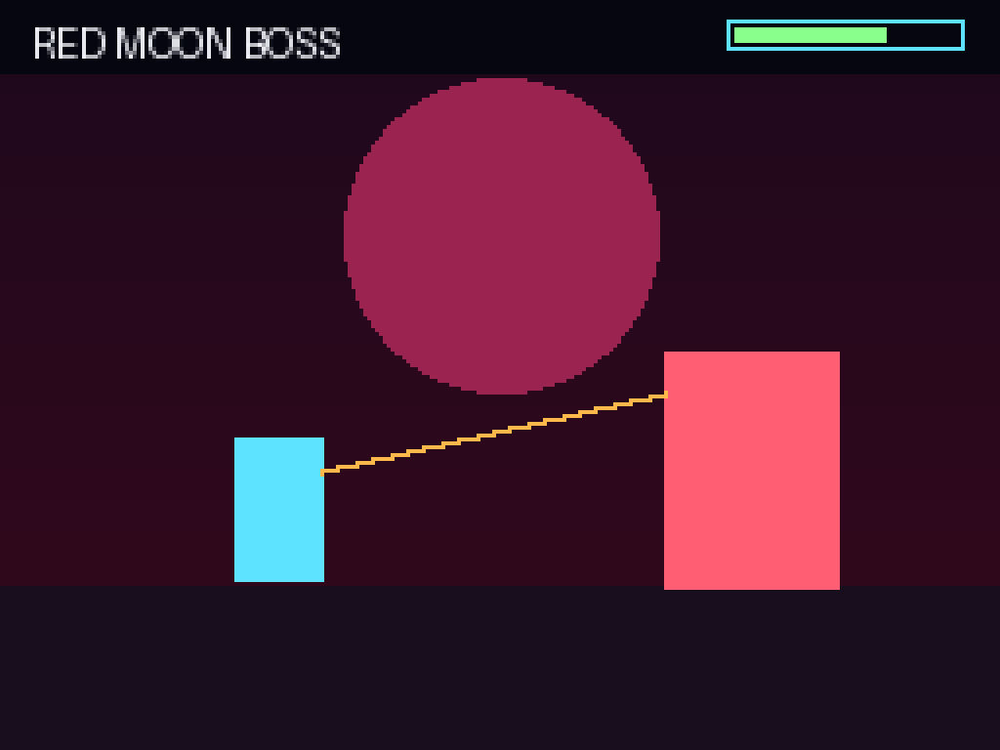
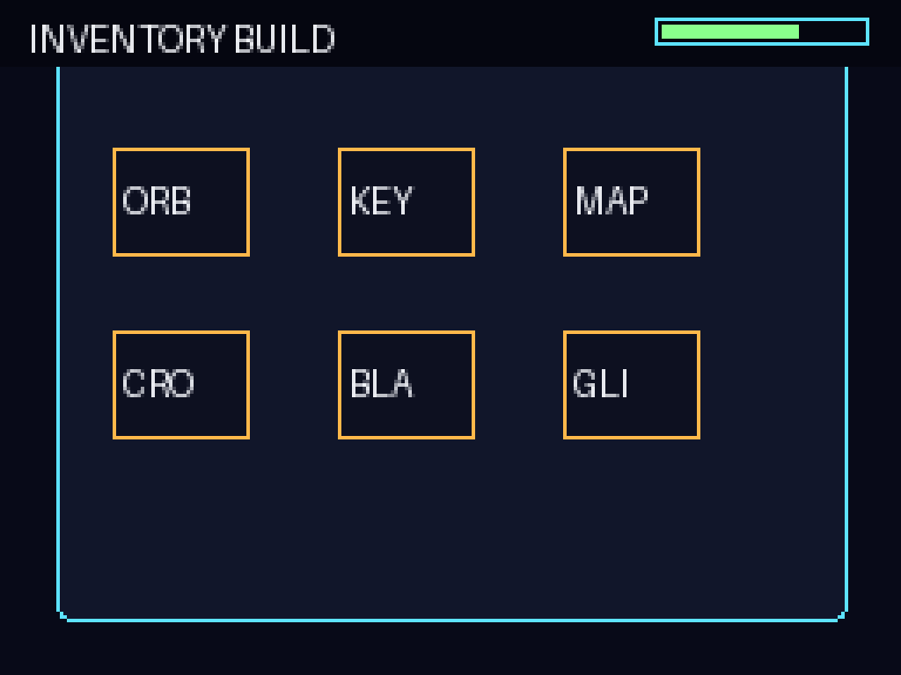
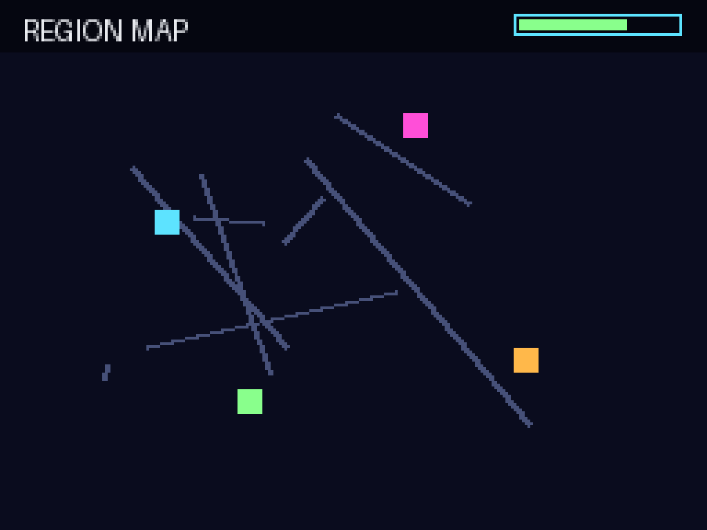
05
06
The recovered audio is incomplete: a handful of loops, title-screen hum and one boss theme that sounds like a machine trying to remember a hymn.
No audio autoplays in this v1 demo. Track buttons are visual interaction states only.
07
Archive terminal / end frame